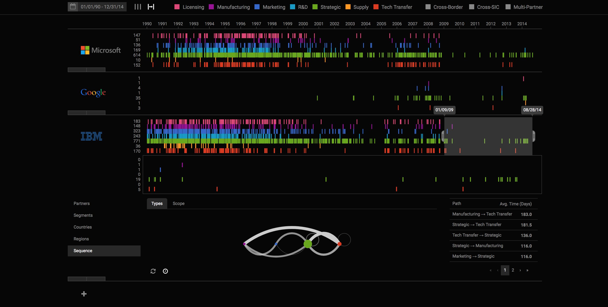

Rahul C. Basole, Timothy Major, and Arjun Srinivasan
In an increasingly global and competitive business landscape, firms must collaborate and partner with others to ensure survival, growth, and innovation. Understanding the evolutionary composition of a firm’s relationship portfolio and the underlying formation strategy is a difficult task given the multidimensional, temporal, and geospatial nature of the data. In collaboration with senior executives, we iteratively determine core design requirements and then design and implement an interactive visualization system that enables decision makers to gain both systemic (macro) and detailed (micro) insights into a firm’s alliance activities and discover patterns of multidimensional relationship formation. Our system provides both sequential and temporal representation modes, a rich set of additive cross-linked filters, the ability to stack multiple alliance portfolios, and a dynamically updated activity state model visualization to inform decision makers of past and likely future relationship moves. We illustrate our tool with examples of alliance activities of firms listed on the S&P 500. A controlled experiment and real-world evaluation with practitioners and researchers reveals significant evidence of the value of our visual analytic tool. Our design study contributes to design science by addressing a known problem (i.e., alliance portfolio analysis) with a novel solution (interactive, pixel-based multivariate visualization) and to the rapidly emerging area of data-driven visual decision support in corporate strategy contexts. We conclude with implications and future research opportunities.